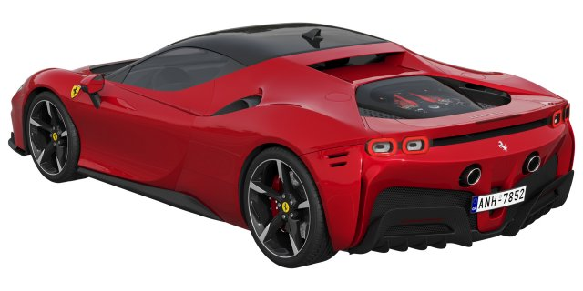

O Ferrari SF90 Stradale é um carro esportivo híbrido plug-in produzido pela Ferrari. Ele foi lançado em 2019 e é o primeiro carro de produção em série da Ferrari a apresentar um trem de força híbrido plug-in. O carro é equipado com um motor V8 turbo de 4.0 litros e três motores elétricos, que juntos produzem uma potência máxima de 1.000 cavalos. O carro tem uma relação peso-potência de 1,57 kg/cv e é capaz de gerar 390 quilos de pressão aerodinâmica a uma velocidade de 250 km/h1. O modelo foi idealizado em homenagem aos 90 anos da mais tradicional equipe da Fórmula, o Scuderia Ferrari1.
Uma curiosidade interessante sobre o Ferrari SF90 Stradale é que ele é o primeiro carro de produção em série da Ferrari a apresentar um trem de força híbrido plug-in. Além disso, o carro é capaz de percorrer até 25 km no modo totalmente elétrico. O Ferrari SF90 Stradale também é o primeiro carro da Ferrari a apresentar um sistema de tração nas quatro rodas